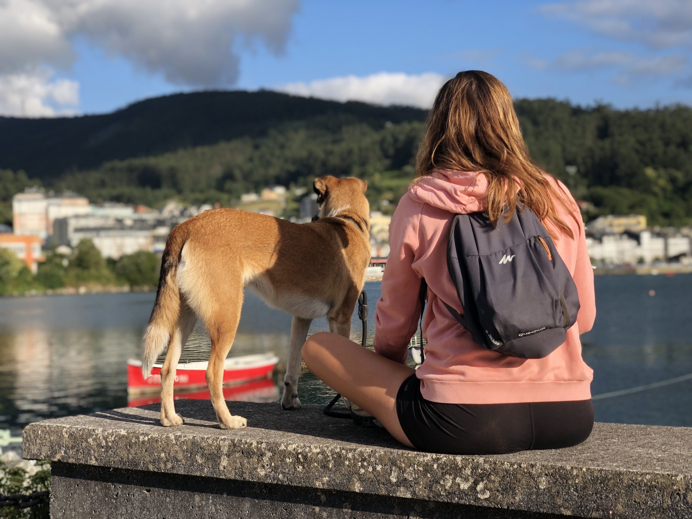

¿Alguien ha dicho aficiones?

Pues parece que tengo unas cuantas, así que he elegido las 5 que me encanta tener en mi día a día.
- Pasar tiempo de calidad con mi familia y mis seres queridos.
- Dar largos paseos con mi perrita, Noah.
- Hacer Crossfit.
- Aprender algo nuevo y útil para mi vida profesional y/o personal.
- Comer rico y saludable. Esto incluye buscar y hacer recetas nuevas, así como aprender sobre nuevos ingredientes.
Se me han ocurrido algunas más que no podía dejar fuera de la lista, así que allá van:
- Comunicarme en diferentes idiomas
- Ayudar a todo aquel que puedo en sus proyectos de desarrollo de marca, servicios y/o productos
- Leer
- Cuidar mis plantas
- Hacer pilates
- Escuchar música
- Mantener una buena conversación
- Viajar, conocer nuevos lugares y nuevas culturas
Sofía, quiero...
Volver a tu CV
Contactar contigo